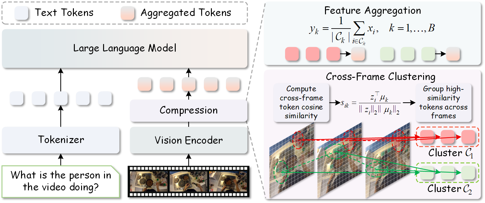
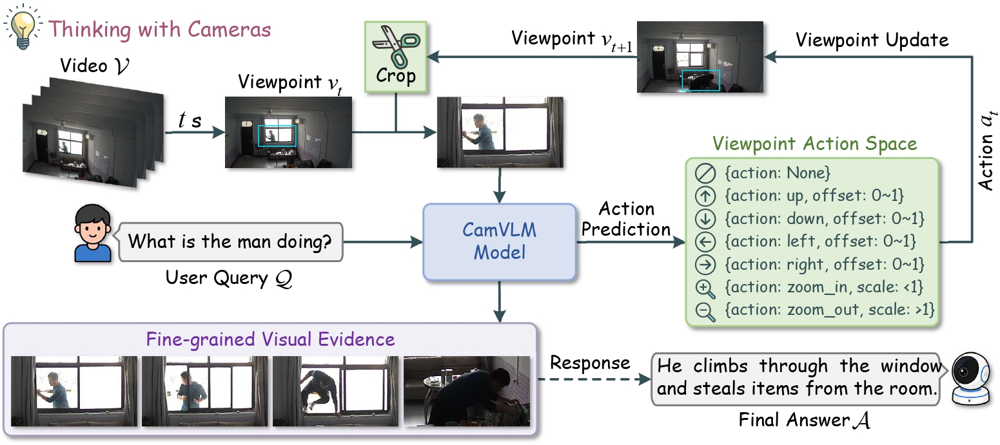
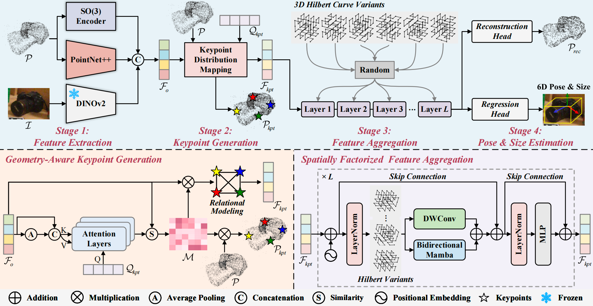
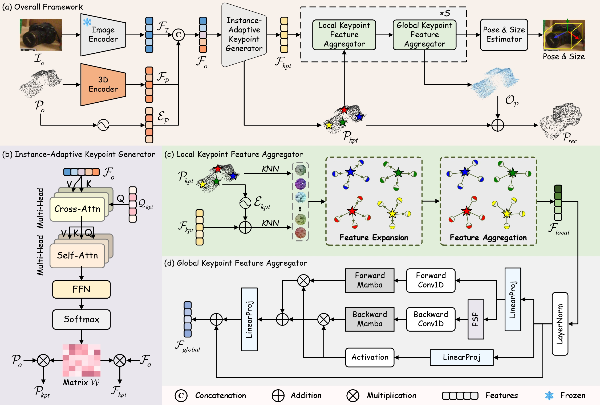

About Me
I am currently a first-year master's student at Central South University, under the supervision of Prof. Shichao Kan. Before that, I received my bachelor's degree from Wuhan Institute of Technology in 2026, where I worked closely with Prof. Lu Zou.
My recent research focuses on Multimodal Large Language Models (MLLMs), Video Understanding, and Spatial Intelligence. If you are interested in collaborating with me, please feel free to contact me via xiaozhang0479@gmail.com or WeChat!

News
- 🎉 2026.07: REF-Pose is accepted by ACM MM 2026.
- 🎉 2026.04: I join SenseTime Research as a research intern.
- 🎉 2025.04: My first work, INKL-Pose, is available on arXiv.
Publications


Thinking with Cameras: Active Visual Reasoning via Dynamic Viewpoint Control for Surveillance Video Understanding

Rotation-Equivariant and Spatially Factorized Keypoint Modeling for Category-Level Object Pose Estimation
[Paper]

Education
- 2026.09 - 2029.06 | Central South University Master's Degree in Computer Technology.
- 2022.09 - 2026.06 | Wuhan Institute of Technology Bachelor's Degree in Artificial Intelligence. Rank: 2/106.